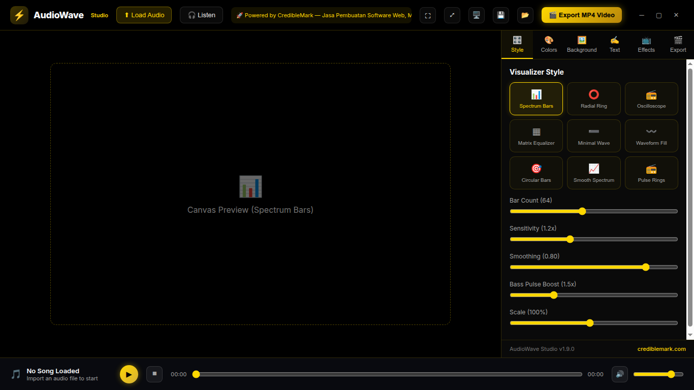
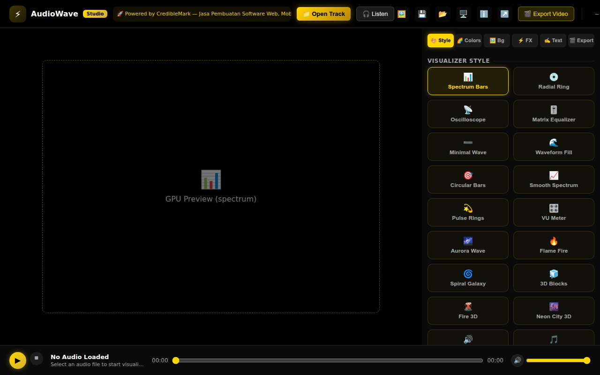

legacy_tauri_backup/src (CSS + JSX), Slint dari ui/*.slint. Screenshot via Chrome headless.

| Elemen | Legacy Tauri | Native Slint | Status |
|---|---|---|---|
| Background utama | #000000 (hitam murni) | #0f1117 (biru gelap) | BERBEDA |
| Navbar | #000000 + border gold | #161922 | BERBEDA |
| Control panel | rgba(10,10,10,0.96) | #12151e | BERBEDA |
| Audio bar | rgba(10,11,16,0.95) | #161922 | BERBEDA |
| Accent utama | #ffd700 (GOLD) | #00f0ff (CYAN) | BERBEDA |
| Accent sekunder | #d4af37 (dark gold) | #ff007f (pink) | BERBEDA |
| Tombol Export | gradient gold → hitam teks | outline cyan | BERBEDA |
| Text utama | #f8fafc | #ffffff | ≈ SAMA |
| Text muted | #a3a3a3 | #a0aec0 | ≈ SAMA |
| Dimensi | Legacy Tauri | Native Slint | Status |
|---|---|---|---|
| Navbar height | 60px | 56px | 4px beda |
| Control panel width | 380px | 380px | SAMA |
| Audio bar height | 64px | 64px | SAMA |
| Panel tabs | 6 tab (Style, Colors, Background, Text, Effects, Export) | 6 tab (Style, Colors, Background, Effects, Text, Export) | SAMA (urutan Text/Effects tukar) |
| Style selector | Grid kartu 19 style | ComboBox 19 style | Grid vs dropdown |
| Canvas preview | Area utama | Area utama (Image) | SAMA |
| Fitur | Legacy Tauri | Native Slint | Status |
|---|---|---|---|
| 19 visualizer styles | ✅ Ya | ✅ Ya (setelah paritas) | SAMA |
| Bar gap/width/rounding | ✅ Ya (spectrum) | ✅ Ya | SAMA |
| Mirror waves | ✅ Ya | ✅ Ya | SAMA |
| Fire 3D dims | ✅ Ya (api3D) | ✅ Ya | SAMA |
| Radial center image | ✅ Ya | ✅ Ya | SAMA |
| Peak markers | ✅ Ya | ✅ Ya | SAMA |
| Save/Load preset | ✅ Ya (navbar) | ✅ Ya (navbar) | SAMA |
| Mute button | ✅ Ya | ✅ Ya | SAMA |
| Listen (mic input) | ✅ Ya | ❌ Tidak | BELUM DIPORT |
| Pop-out preview | ✅ Ya | ❌ Tidak | BELUM DIPORT |
| Window controls (min/max/close) | ✅ Ya (custom) | ⚠️ Native window decorations | BERBEDA |
| Ticker CredibleMark | ✅ Ya | ❌ Tidak | BELUM DIPORT |
| Export modal detail | ✅ Kaya (method, engine, codec, RAM) | ✅ Kaya (aspect, format, encoder, FFT) | SAMA (struktur berbeda) |
| Hardware modal | ✅ Sangat detail | ✅ Detail (GPU, encoder, OS, rescan) | SAMA |
ui/*.slint. Lihat VISUAL_PARITY.md untuk daftar lengkap.